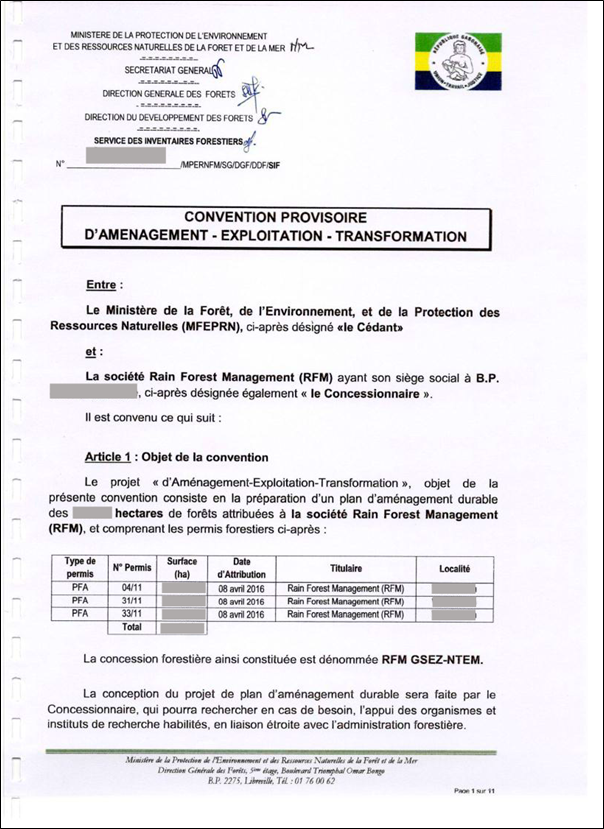
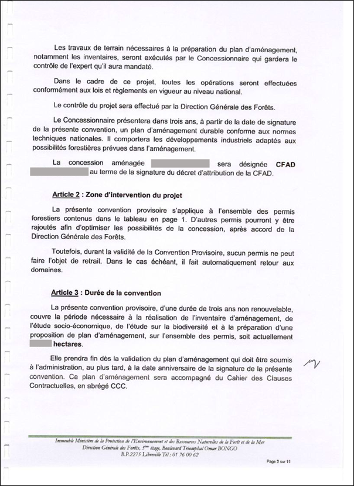
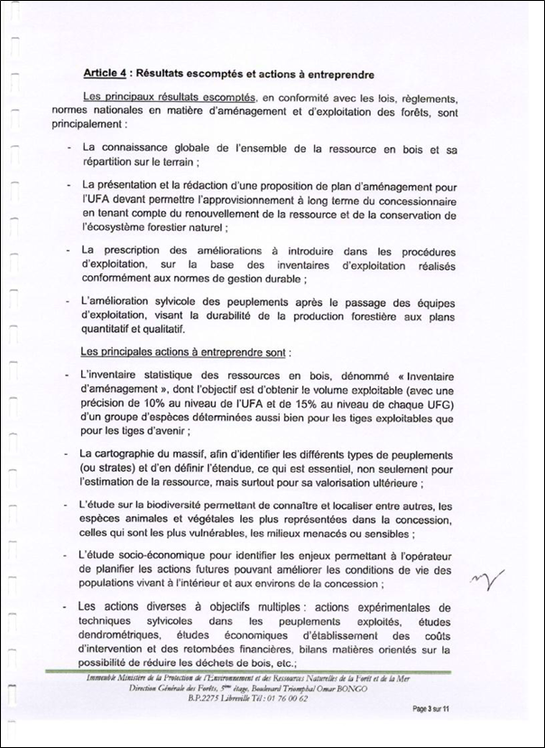
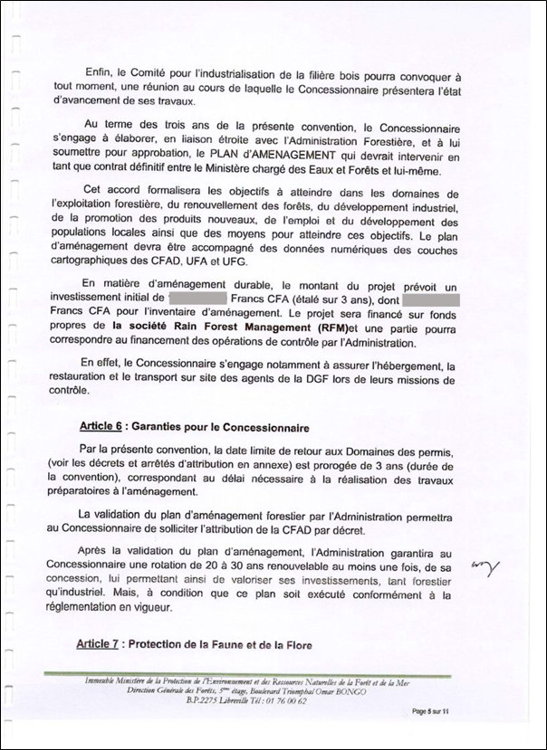
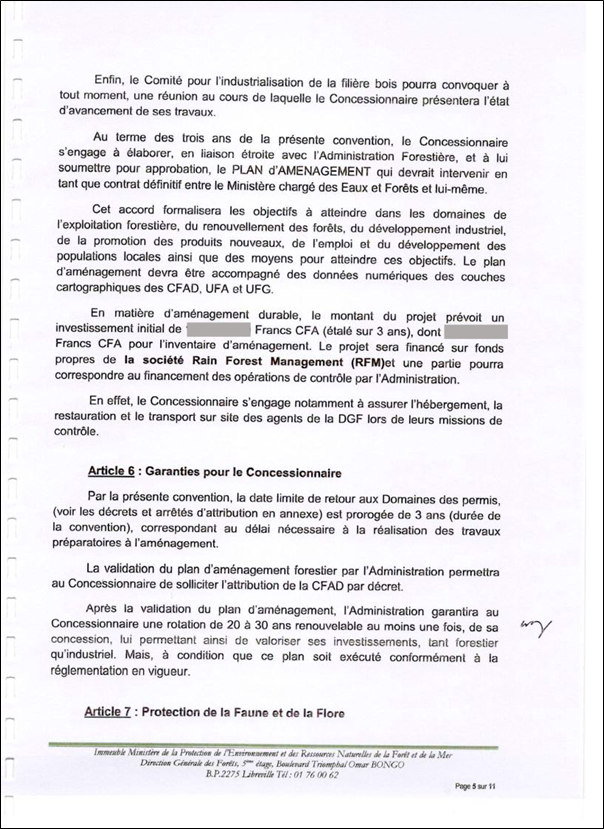

Implementing Timber Leglity Assurance Systems
A guide to comply with timber legality requirements in Cameroon and to support due diligence

GABON

Gabon’s Timber legality requirements
Gabon is negotiating a Voluntary Partnership Agreement with the European Union. However, a Timber Legality Assurance System has not been developed in this country and there are many identified risks for timber importers. Compliance with national laws and helping to prevent the import of illegal timber into other countries is highly dependent on the Government developing effective control and verification system, operators complying with legal requirements and conducting due diligence. By being aware of the legal requirements in Gabon highlighted below, law enforcement agencies and importers can implement control measures to promote the legal timber being harvested, transported, and traded. Importers and verification agencies may refer to or use this definition in implementing due diligence.
Suggestions for developing and implementing due diligence for importers
Due diligence and complexity

Developing due diligence systems
Implementing due diligence
The following documents are selected in accordance with Gabon’s legal definition and/or legal requirements in different stages of the supply chain.
Agreement on development - exploitation - transformation (Convention provisoire d'aménagement - exploitation - transformation)
   



Agreement on development - exploitation - transformation is signed and stamped by the Minister of Water, Forests, Sea and Environment (Ministère des eaux, des forets, de la mer et de l'environnement) and the representative of the forestry company. Check signature, validity of seal, name and address of forestry company, concession area, term of agreement.
Approval of the annual operation plan (Approbation du plan annuel d’opération)
The annual operation plan is signed and stamped by the Director of the provincial Department of Water Resources and Forestry. Check signatures, validity of seal, quantity and area of cutting annually.
Decision approving the development plan (Approbation du plan d’aménagement)
The decision approving the development plan is signed, stamped and issued by the Minister of the Ministry of Water, Forests, Sea and Environment to the forestry company. Check signature, seal, number and date of signing, period of implementation of plan, name of forestry company on decision.
Approval of the management plan (Approbation du plan de gestion)
Approval of the management plan is signed and stamped by the Director of the General Department of Forestry for the 5-year management plan of the forest management unit (unité forestière de gestion - UFG). Check signatures, seals, company name and address, quantity and location of UFG, term of implementation.
Certificate of compliance with industrial development plan (Certificat de conformité au plan de développement industriel)
The certificate of compliance with the industrial development plan is signed and stamped by the Director General of the General Department of Timber Industry and Trade and Forest Product Valuation, is issued to the forestry company. Check the signature, seal, number and date of signing the certificate.
Declaration certifying the Report on Inventory Management (Déclaration aux fin d’immatriculation d’un marteau forestier)
Declaration certifying the report on inventory management is signed, stamped and issued by the Director of the General Department of Forestry to the forestry company. Check signature, seal, date of signing on declaration, name and address of forestry company, quantity/area of assigned forest.
The location of logging (Carnet de chantier)
The location of logging is signed and stamped by the Director of the provincial Department of Water, Forest, Sea and Environment is issued to the forestry company. Check permit number, lot number, location, species, number of trees, date of felling.
Community meeting report (Rapports des rencontre avec les populations)
Community meeting report is signed and stamped by the Director of the Provincial Department of Forestry. Check signatures, seals, local communities and population groups, meeting dates and locations, participants lists and signatures.
CITES Permit
The CITES permit is signed, stamped and issued by the General Director of the Directorate of Conservation of Nature and Wildlife (Directrice Générale de la Faune et des Aires Protégées -DGFAP) to the exporter of CITES timber species. Check the validity, signature and seal, name of the timber owner, species and volume on the permit.
Tax receipts
Tax receipt signed by local tax officer. Check the company name and address, the nature of the payment, the amount of the payment.
Customs Receipt (Reçus de douane)
A Customs Receipt signed by the Customs Authority confirming that the exporter/importer has fulfilled its customs duty. Check the signature, seal, date of signing of the customs authority, cross-check the quantity, weight, volume with the actual.
Loading receipt (Reçus de chargement)
Loading receipt signed by the shipping company, issued to the forestry company. Check signature, seal, date of signing, cross-check name, address of forestry company, quantity, actual weight of goods.
Delivery bill (Bordereau de livraison)
Delivery bill is signed by the head of the bus station/shipping port and issued to the forestry company. Check company name and address, buyer's name, shipment description (species, quantity), location, number of cars/wagons.
Route permits (Feuille de route)
The route permit is signed by the Department of Water, Forests, Sea and Environment and issued to the forestry company. Check the name and address of the consignee company, license number, departure date, destination, shipment description (slats/pallet number...).
Certificate of Origin (Certificat d’origine)

The certificate of origin is signed by the regional director of Department of Customs under the CEMAC (Central African Economic and Monetary Community) and issued to the forestry company. Check the place of collection / production, country of origin, shipping company, recipient's address, shipment description (quantity, weight, wood species, value of goods...).
Transit order (Ordre de transit)
A transit order is signed by an export agent and issued to a forestry company. Check name, address of forestry company/buyer, shipment description (quantity, weight, product type).
Application for registration of national agencies for investment promotion (Fiche d’enregistrement à l’agence nationale de la promotion des investissements)
The registration application form is signed and stamped by the Directors of the Department of Enterprise Management, the Department of Trade Registration, the Department Registration of the General Department of Taxation and the ANPI-Gabon Management Authority. Check the validity of date, signatures, seals of agencies, tax registration numbers, taxpayer numbers in the commercial register.
Commercial register (Immatriculation au registre du commerce)


Enterprises registered in the Commercial Register. Check signature, seal, registration number, type of operation, start date of operation.
Approval of socio-economic study report (Approbation du rapport d’étude socio-économique)
Socio-economic study report signed and approved by the Director of the General Department of Forestry for concession holder (CFAD). Check signature, seal, signing date, CFAD number, study document content.
Approval of the environmental impact study report (Approbation du rapport d’étude d’impact environnemental)
The environmental impact study report is signed and approved by the Director of the General Department of Environment and Nature Protection for the forestry company. Check signature, seal, date of signing, decision number, company name and address.
Social Security receipt (Quittance de sécurité sociale)
ocial Security receipt is signed and stamped by the Agency of National Social Security (la Caisse Nationale de Sécurité Sociale-CNSS) for timber companies. Check the company name, submitted amount, date of payment, payment method, signature and seal.
Minutes of the meeting of the Occupational Safety and Health Committee (Procès verbal de visite du comité de sécurité et santé au travail)
The minutes of the meeting of the Committee on Occupational Safety and Health is signed by the Director of the Company, the Director of the Regional Department of Labor, and the representative of the employees. Check the date and place of the meeting, and the names of the participants.
Labor contract
The labor contract is drawn up by the company and signed by the employer and the employee. Check that the contract contents, information, signatures and seals are complete and accurate.